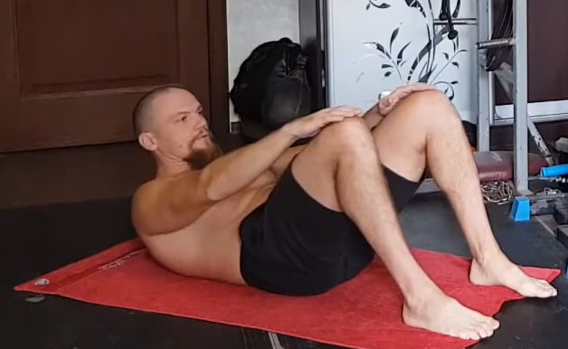
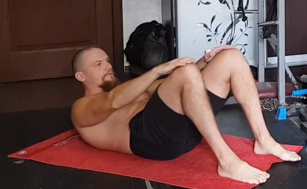
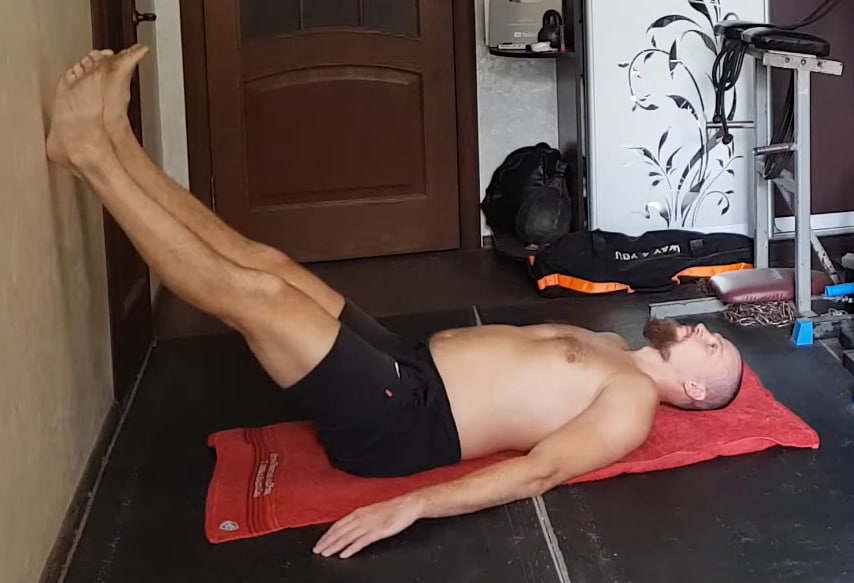

Nota importante antes de comenzar
La idea principal de esta sesión es aprender a exhalar el aire por completo. Si no vaciamos bien los pulmones, tampoco podemos llenarlos bien después: la sangre no se satura de oxígeno de forma óptima, se ralentizan los procesos oxidativos en el organismo y el cuerpo empieza a acumular grasa. La quema de grasa es, en realidad, la oxidación del tejido adiposo gracias al oxígeno durante el trabajo muscular. Cuando la grasa es excesiva, también se altera el equilibrio hormonal, y los problemas solo se acumulan. La calidad y la duración de tu vida están directamente relacionadas con la manera en que respiras.
No es casualidad que las prácticas antiguas den tanta importancia a la respiración: mira a los yoguis y aprende de ellos. Aunque algunos ejercicios de este día parezcan trabajo clásico de abdomen, en realidad todo el entrenamiento está dedicado a educar la respiración.
El conjunto de ejercicios de este día es recomendable hacerlo a diario en ayunas o, como mínimo, un día sí y otro no. Aquí activamos no solo la musculatura responsable de la respiración diafragmática y torácica, sino que también realizamos un masaje profundo de los órganos internos. Si entrenas con el estómago lleno, pueden aparecer náuseas e incluso vómitos. Vigila que durante el trabajo no aparezcan “estrellas” delante de los ojos, oscuridad en la visión ni zumbido en los oídos: son señales de que has ido demasiado lejos. Acostumbra a tu cuerpo a respirar correctamente y te sentirás más ligero no solo en el entrenamiento, sino también en la vida diaria.
1. Respiración de fuerza con papel o tela

Colócate de pie con la espalda recta, el pecho abierto y la mirada ligeramente hacia arriba. Pon las manos en la cintura o sobre las costillas para sentir el trabajo del diafragma. Inhala profundo por la nariz llenando el abdomen, como si empujaras el aire hacia abajo sin levantar los hombros.
Toma un trozo de papel o una tela ligera. Al exhalar por la boca, expulsa el aire de forma fuerte y dirigida, intentando lanzar el papel hacia arriba y mantenerlo en el aire el mayor tiempo posible. Cada elevación del papel es una exhalación completa y consciente. No contengas el aire: inhala de nuevo de forma tranquila y repite.
Realiza 10 repeticiones, concentrándote en vaciar los pulmones en cada exhalación sin llegar al mareo ni a la hiperventilación.
2. Elevación parcial del abdomen
 

Túmbate boca arriba con las rodillas flexionadas y los pies apoyados en el suelo. Coloca las manos sobre las rodillas o deslizándolas en su dirección. Desde ahí eleva ligeramente los hombros del suelo sin despegar la zona lumbar: el movimiento es corto, como si quisieras “exprimir” el abdomen desde abajo, no incorporarte por completo.
En cada repetición exhala con fuerza al subir, apretando el abdomen, e inhala al bajar sin dejar que los músculos se relajen del todo. La respiración va sincronizada con el movimiento: una subida = un fuerte soplido de aire hacia afuera.
Realiza 10 repeticiones manteniendo siempre la misma amplitud y un control total del core.
3. Uddiyana Bandha con bombeo abdominal


Colócate de pie con los pies al ancho de los hombros e inclínate ligeramente hacia adelante, apoyando las manos por encima de las rodillas. Exhala todo el aire hasta vaciar completamente los pulmones y realiza una retención con los pulmones vacíos.
En esta apnea, eleva el diafragma hacia arriba y mete el abdomen hacia dentro creando un “vacío” abdominal. Después relaja el abdomen y deja que salga hacia afuera, siempre sin tomar aire. Alterna este movimiento de meter y soltar el abdomen varias veces dentro de la misma retención.
Cuando ya no puedas mantener la apnea, inhala suave y descansa unos segundos. Cada retención cuenta como una repetición. Realiza 10 repeticiones, intentando añadir uno o dos ciclos de bombeo más cada vez, sin forzar la respiración.
4. Uddiyana Bandha lenta con retención


Mantén la misma postura del ejercicio anterior: de pie, inclinado hacia adelante y con las manos apoyadas por encima de las rodillas. Exhala de nuevo todo el aire hasta dejar los pulmones vacíos.
En apnea, eleva lentamente el diafragma y mete el abdomen muy despacio hacia dentro, creando un vacío profundo y uniforme. Mantén esta posición sin mover el abdomen, sintiendo cómo se estiran y activan las zonas internas. La entrada al vacío es lenta y la salida también: relaja el abdomen poco a poco y solo después toma aire.
Respira tranquilo unos segundos y repite. Realiza 10 repeticiones, controlando en todo momento la duración de la apnea sin llevarla al límite.
5. Respiración diafragmática con piernas elevadas

Túmbate boca arriba y apoya las piernas en la pared con una ligera inclinación, de modo que la espalda y la zona lumbar queden relajadas sobre el suelo. Suelta completamente el abdomen y deja que se vuelva blando.
Respira solo con el diafragma: al inhalar, el vientre sube; al exhalar, baja de forma natural sin esfuerzo. La respiración debe ser continua, tranquila y sin ritmo forzado. Intenta mantener la parte alta del pecho casi inmóvil, dejando que el trabajo lo haga la parte baja del torso.
Mantén esta forma de respirar durante 1–2 minutos, hasta que el abdomen se ablande y la respiración se vuelva profunda y estable.
6. Elevación parcial del abdomen (segunda ronda)


Vuelve a la misma posición que en el ejercicio 2: tumbado boca arriba, con las rodillas flexionadas y los pies apoyados. Desliza las manos hacia las rodillas y eleva ligeramente los hombros del suelo sin despegar la zona lumbar. De nuevo, el movimiento es corto y tenso.
Aquí el objetivo es remarcar todavía más la respiración: en cada repetición exhala con fuerza en la subida, apretando el abdomen, e inhala en la bajada manteniendo el core activo. Siente cómo cada exhalación vacía los pulmones un poco más y hace que el trabajo de la musculatura respiratoria sea más intenso.
Realiza 10 repeticiones con el mismo ángulo y ritmo, recordando que, aunque parezca una serie más para el abdomen, seguimos entrenando sobre todo la respiración.